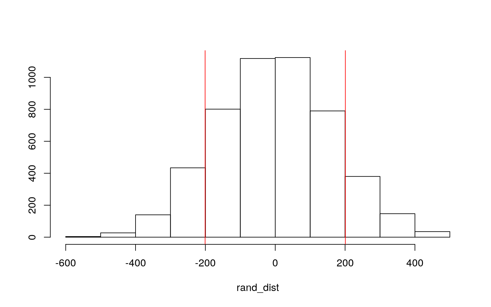
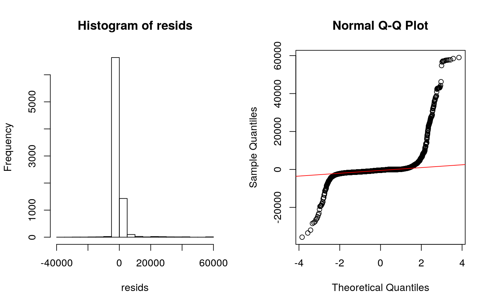

covid <- read.csv(file = "covid19.csv",
header = TRUE,
quote="\"",
stringsAsFactors= TRUE,
strip.white = TRUE)The dataset I chose shows the death counts for influenza, pneumonia, and COVID-19 reported to National Center for Health Statistics (NCHS) during the year of 2020 to 2021. The data is organized by date, state, and age group. For my categorical variable, I will be using the age groups, which splits into 4 groups including all age, 0-17 years, 18-64 years, and 65 years and over. For the binary variable, I will be using the year that the data was collected, which divides into 2020 and 2021. For the numerical variables, I will be using the COVID-19 deaths, Influenza deaths, and Pneumonia deaths. The deaths were recorded weekly starting from 1/4/2020 through 4/24/2021 for each state and age groups, and there are total of 17388 observations.
man1<-manova(cbind(COVID.19.Deaths,Pneumonia.Deaths,Influenza.Deaths)~Age.Group, data=covid)
summary(man1)## Df Pillai approx F num Df den Df Pr(>F)
## Age.Group 3 0.042663 47.731 9 29778 < 2.2e-16 ***
## Residuals 9926
## ---
## Signif. codes: 0 '***' 0.001 '**' 0.01 '*' 0.05 '.' 0.1
' ' 1summary.aov(man1)## Response COVID.19.Deaths :
## Df Sum Sq Mean Sq F value Pr(>F)
## Age.Group 3 2.8548e+08 95158377 69.178 < 2.2e-16 ***
## Residuals 9926 1.3654e+10 1375562
## ---
## Signif. codes: 0 '***' 0.001 '**' 0.01 '*' 0.05 '.' 0.1
' ' 1
##
## Response Pneumonia.Deaths :
## Df Sum Sq Mean Sq F value Pr(>F)
## Age.Group 3 231867918 77289306 107.12 < 2.2e-16 ***
## Residuals 9926 7161941841 721534
## ---
## Signif. codes: 0 '***' 0.001 '**' 0.01 '*' 0.05 '.' 0.1
' ' 1
##
## Response Influenza.Deaths :
## Df Sum Sq Mean Sq F value Pr(>F)
## Age.Group 3 103469 34490 44.872 < 2.2e-16 ***
## Residuals 9926 7629302 769
## ---
## Signif. codes: 0 '***' 0.001 '**' 0.01 '*' 0.05 '.' 0.1
' ' 1
##
## 7458 observations deleted due to missingnesscovid1 <- na.omit(covid)
library(rstatix)
group <- covid1$Age.Group
DVs <- covid1 %>% select(COVID.19.Deaths,Pneumonia.Deaths,Influenza.Deaths)
sapply(split(DVs,group), mshapiro_test)## 0-17 years 18-64 years 65 years and over All Ages
## statistic 0.1363562 0.3452072 0.2023092 0.3342874
## p.value 1.035559e-63 1.824636e-64 1.259922e-72
3.28008e-69lapply(split(DVs,group), cov)## $`0-17 years`
## COVID.19.Deaths Pneumonia.Deaths Influenza.Deaths
## COVID.19.Deaths 1.17743839 1.551354 0.02557246
## Pneumonia.Deaths 1.55135387 6.208294 2.33940243
## Influenza.Deaths 0.02557246 2.339402 1.98702427
##
## $`18-64 years`
## COVID.19.Deaths Pneumonia.Deaths Influenza.Deaths
## COVID.19.Deaths 149689.568 111369.199 1176.0750
## Pneumonia.Deaths 111369.199 89183.965 1758.1961
## Influenza.Deaths 1176.075 1758.196 330.2854
##
## $`65 years and over`
## COVID.19.Deaths Pneumonia.Deaths Influenza.Deaths
## COVID.19.Deaths 2188417.68 1501595.38 7994.1804
## Pneumonia.Deaths 1501595.38 1119636.85 11580.5164
## Influenza.Deaths 7994.18 11580.52 815.1672
##
## $`All Ages`
## COVID.19.Deaths Pneumonia.Deaths Influenza.Deaths
## COVID.19.Deaths 3324054.9 2325866.75 14866.600
## Pneumonia.Deaths 2325866.8 1762885.11 22234.056
## Influenza.Deaths 14866.6 22234.06 2058.999covid1 %>% group_by(Age.Group) %>% summarize(mean(COVID.19.Deaths),mean(Pneumonia.Deaths), mean(Influenza.Deaths))## # A tibble: 4 x 4
## Age.Group `mean(COVID.19.Deaths)`
`mean(Pneumonia.Deaths)` `mean(Influenza.Deaths)`
## <fct> <dbl> <dbl> <dbl>
## 1 0-17 years 0.183 0.471 0.128
## 2 18-64 years 119. 108. 3.28
## 3 65 years and over 336. 299. 5.15
## 4 All Ages 408. 370. 8.60pairwise.t.test(covid1$COVID.19.Deaths,covid1$Age.Group, p.adj="none")##
## Pairwise comparisons using t tests with pooled SD
##
## data: covid1$COVID.19.Deaths and covid1$Age.Group
##
## 0-17 years 18-64 years 65 years and over
## 18-64 years 0.0063 - -
## 65 years and over 1.4e-15 2.3e-08 -
## All Ages < 2e-16 1.0e-13 0.0513
##
## P value adjustment method: nonepairwise.t.test(covid1$Pneumonia.Deaths,covid1$Age.Group, p.adj="none")##
## Pairwise comparisons using t tests with pooled SD
##
## data: covid1$Pneumonia.Deaths and covid1$Age.Group
##
## 0-17 years 18-64 years 65 years and over
## 18-64 years 7e-04 - -
## 65 years and over < 2e-16 9.2e-12 -
## All Ages < 2e-16 < 2e-16 8e-03
##
## P value adjustment method: nonepairwise.t.test(covid1$Influenza.Deaths,covid1$Age.Group, p.adj="none")##
## Pairwise comparisons using t tests with pooled SD
##
## data: covid1$Influenza.Deaths and covid1$Age.Group
##
## 0-17 years 18-64 years 65 years and over
## 18-64 years 0.0023 - -
## 65 years and over 4.3e-07 0.0413 -
## All Ages < 2e-16 6.1e-09 7.2e-05
##
## P value adjustment method: none0.05/22## [1] 0.0022727271- 0.95^22## [1] 0.6764665A one-way MANOVA was conducted to determine the effect of the age groups (All age, 0-17,18-65, and 65+) on three dependent variables (COVID deaths, Pneumonia deaths, Influenza deaths). Multivariate normality and relative homogeneity were revealed through multivariate normality assumption test and covariance matrices. Significant differences were found among 4 age groups for at least one of the dependent variables. 1 MANOVA test, 3 ANOVAs, and 18 t tests (22 tests) were performed. The probability that you have made at least one type I error is 0.6764. The significance level should be 0.00227 to keep the overall type I error rate at .05. Some of the MANOVA assumptions include random samples, multivariate normality, homogeneity, linear relationships, no extreme univariate/multivariate outliers. Some of the assumptions were probably violated.
covid_19 <- c(1384,1055,928,753,563,442,349,200,92,40)
pneumonia <- c(991,795,747,645,526,418,368,234,122,46)
deaths <-data.frame(disease=c(rep("covid_19",10),rep("pneumonia",10)),deathnumber=c(covid_19,pneumonia))
head(deaths)## disease deathnumber
## 1 covid_19 1384
## 2 covid_19 1055
## 3 covid_19 928
## 4 covid_19 753
## 5 covid_19 563
## 6 covid_19 442new<-data.frame(disease=sample(deaths$disease),deathnumber=deaths$deathnumber)
new%>%group_by(disease)%>%
summarize(means=mean(deathnumber))%>%summarize(`mean_diff`=diff(means))## # A tibble: 1 x 1
## mean_diff
## <dbl>
## 1 -22.2rand_dist<-vector()
for(i in 1:5000){
new<-data.frame(disease=sample(deaths$disease),deathnumber=deaths$deathnumber)
rand_dist[i]<-mean(new[new$disease=="covid_19",]$deathnumber)-
mean(new[new$disease=="pneumonia",]$deathnumber)}
{hist(rand_dist,main="",ylab=""); abline(v = c(-200.8, 200.8),col="red")}
mean(rand_dist>208.8 | rand_dist < -200.8)## [1] 0.2276The null hypothesis is that the mean number of deaths for past 3 months (February to April) is the same for COVID 19 and Pneumonia. The alternative hypothesis is that the mean number of deaths is different for COVID 19 and Pneumonia. After taking 5000 random permutations, I made a histogram. The two-tailed p-value was 0.227, so I failed to reject the null hypothesis. This means that I failed to reject that the mean number of deaths is the same for COVID 19 and Pneumonia.
fit<-lm(Total.Deaths ~ COVID.19.Deaths*Age.Group, data=covid1); summary(fit)##
## Call:
## lm(formula = Total.Deaths ~ COVID.19.Deaths * Age.Group,
data = covid1)
##
## Residuals:
## Min 1Q Median 3Q Max
## -35705 -1017 -398 -12 58992
##
## Coefficients:
## Estimate Std. Error t value Pr(>|t|)
## (Intercept) 29.22 111.19 0.263 0.7927
## COVID.19.Deaths 87.58 101.07 0.866 0.3863
## Age.Group18-64 years 429.53 149.59 2.871 0.0041 **
## Age.Group65 years and over 1181.56 142.44 8.295 <2e-16
***
## Age.GroupAll Ages 1556.13 142.19 10.944 <2e-16 ***
## COVID.19.Deaths:Age.Group18-64 years -81.62 101.07
-0.808 0.4194
## COVID.19.Deaths:Age.Group65 years and over -83.22 101.07
-0.823 0.4103
## COVID.19.Deaths:Age.GroupAll Ages -82.84 101.07 -0.820
0.4125
## ---
## Signif. codes: 0 '***' 0.001 '**' 0.01 '*' 0.05 '.' 0.1
' ' 1
##
## Residual standard error: 4265 on 8338 degrees of freedom
## Multiple R-squared: 0.6685, Adjusted R-squared: 0.6683
## F-statistic: 2402 on 7 and 8338 DF, p-value: < 2.2e-16coviddeaths_c <- covid1$COVID.19.Deaths - mean(covid1$COVID.19.Deaths,
na.rm = TRUE)
fitt <- lm(Total.Deaths ~ coviddeaths_c * Age.Group, data = covid1)
summary(fitt)##
## Call:
## lm(formula = Total.Deaths ~ coviddeaths_c * Age.Group,
data = covid1)
##
## Residuals:
## Min 1Q Median 3Q Max
## -35705 -1017 -398 -12 58992
##
## Coefficients:
## Estimate Std. Error t value Pr(>|t|)
## (Intercept) 21428.77 24679.10 0.868 0.385
## coviddeaths_c 87.58 101.07 0.866 0.386
## Age.Group18-64 years -19514.54 24679.31 -0.791 0.429
## Age.Group65 years and over -19154.21 24679.26 -0.776
0.438
## Age.GroupAll Ages -18685.27 24679.26 -0.757 0.449
## coviddeaths_c:Age.Group18-64 years -81.62 101.07 -0.808
0.419
## coviddeaths_c:Age.Group65 years and over -83.22 101.07
-0.823 0.410
## coviddeaths_c:Age.GroupAll Ages -82.84 101.07 -0.820
0.412
##
## Residual standard error: 4265 on 8338 degrees of freedom
## Multiple R-squared: 0.6685, Adjusted R-squared: 0.6683
## F-statistic: 2402 on 7 and 8338 DF, p-value: < 2.2e-16For every 1-unit increase in COVID.19.Deaths, the predicted Total.Deaths increases by 87.58. The Age.Group of 18-64 years with zero COVID.19.Deaths have predicted Total.Deaths that is 429 higher than the Age.Group of 0-17 years with zero COVID.19.Deaths. The Age.Group of 65 years and over with zero COVID.19.Deaths have predicted Total.Deaths that is 19514.54 higher than the Age.Group of 0-17 years with zero COVID.19.Deaths. When I mean center the data, it shows that the Age.Group of 18-64 years with average COVID.19.Deaths have predicted Total.Deaths that is 19154.21 less than the Age.Group of 0-17 years with average COVID.19.Deaths. The Age.Group of 65 years and over with average COVID.19.Deaths have predicted Total Deaths that is 17149 lower than the Age.Group of 0-17 years with average COVID.19.Deaths. The slope of Covid Deaths on Total Deaths for the Age Group 18-64 years was 81.62 less than the Age Group 0-17.
covid1 %>% select(Total.Deaths, COVID.19.Deaths, Age.Group) %>% na.omit %>%
ggplot(aes(COVID.19.Deaths, Total.Deaths, color = Age.Group)) +
geom_point() + geom_smooth(method = "lm") + geom_vline(xintercept = mean(covid1$COVID.19.Deaths,
na.rm = T), lty = 2)#install.packages("lmtest")
library(lmtest)
fit2 <-lm(Total.Deaths ~ COVID.19.Deaths*Age.Group, data=covid1)
bptest(fitt)##
## studentized Breusch-Pagan test
##
## data: fitt
## BP = 703.42, df = 7, p-value < 2.2e-16resids<-fit2$residuals; fitvals<-fit2$fitted.values
ggplot()+geom_point(aes(fitvals,resids))+geom_hline(yintercept=0, col="red")par(mfrow=c(1,2)); hist(resids); qqnorm(resids); qqline(resids, col='red')
ks.test(resids, "pnorm", sd=sd(resids))##
## One-sample Kolmogorov-Smirnov test
##
## data: resids
## D = 0.34713, p-value < 2.2e-16
## alternative hypothesis: two-sidedsum((fitvals-mean(covid1$Total.Deaths))^2)/sum((covid1$Total.Deaths-mean(covid1$Total.Deaths))^2)## [1] 0.6685351#install.packages("sandwich")
library(sandwich)
coeftest(fit2)[,1:2]## Estimate Std. Error
## (Intercept) 29.22345 111.1892
## COVID.19.Deaths 87.57734 101.0736
## Age.Group18-64 years 429.53386 149.5932
## Age.Group65 years and over 1181.55759 142.4399
## Age.GroupAll Ages 1556.13076 142.1918
## COVID.19.Deaths:Age.Group18-64 years -81.62083 101.0739
## COVID.19.Deaths:Age.Group65 years and over -83.22384
101.0736
## COVID.19.Deaths:Age.GroupAll Ages -82.83766 101.0736coeftest(fit2, vcov = vcovHC(fit2))##
## t test of coefficients:
##
## Estimate Std. Error t value Pr(>|t|)
## (Intercept) 29.2234 1.9674 14.854 < 2.2e-16 ***
## COVID.19.Deaths 87.5773 7.4137 11.813 < 2.2e-16 ***
## Age.Group18-64 years 429.5339 37.8379 11.352 < 2.2e-16
***
## Age.Group65 years and over 1181.5576 90.5492 13.049 <
2.2e-16 ***
## Age.GroupAll Ages 1556.1308 118.8185 13.097 < 2.2e-16
***
## COVID.19.Deaths:Age.Group18-64 years -81.6208 7.4214
-10.998 < 2.2e-16 ***
## COVID.19.Deaths:Age.Group65 years and over -83.2238
7.4179 -11.219 < 2.2e-16 ***
## COVID.19.Deaths:Age.GroupAll Ages -82.8377 7.4189
-11.166 < 2.2e-16 ***
## ---
## Signif. codes: 0 '***' 0.001 '**' 0.01 '*' 0.05 '.' 0.1
' ' 166.6 percent of the variation is explained by the model. The histogram of residuals seems pretty normal but it did not meet the linearity assumption. The residuals are concentrated in one area so it is hard to tell it’s homoscedastic. The robust standard error did not change any coefficients but decreased the overall values of the standard errors.
fit2 <-lm(Total.Deaths ~ COVID.19.Deaths*Age.Group, data=covid1)
resids<-fit2$residuals
fitted<-fit2$fitted.values
resid_resamp<-replicate(5000,{
new_resids<-sample(resids,replace=TRUE) #resample resids w/ replacement
new_y<-fitted+new_resids #add new resids to yhats to get new "data"
fit<-lm(new_y~COVID.19.Deaths*Age.Group,data=covid1) #refit model
coef(fit)
})
resid_resamp%>%t%>%as.data.frame%>%summarize_all(sd)## (Intercept) COVID.19.Deaths Age.Group18-64 years
Age.Group65 years and over Age.GroupAll Ages
## 1 110.7463 98.94189 151.0157 142.3315 142.6786
## COVID.19.Deaths:Age.Group18-64 years
COVID.19.Deaths:Age.Group65 years and over
## 1 98.94131 98.94347
## COVID.19.Deaths:Age.GroupAll Ages
## 1 98.94282The standard errors were close to the ones before the robust standard errors were applied. It should provide lower p-values.
data<-covid1%>%mutate(y=ifelse(MMWRyear=="2020",1,0))
data$outcome<-factor(covid1$MMWRyear,levels=c("2020","2021"))
head(data)## Data.As.Of Start.Week End.Week MMWRyear MMWRweek
Week.Ending.Date Group Indicator
## 1 04/29/2021 12/29/2019 01/04/2020 2020 1 01/04/2020 By
Week Week-ending
## 2 04/29/2021 12/29/2019 01/04/2020 2020 1 01/04/2020 By
Week Week-ending
## 3 04/29/2021 12/29/2019 01/04/2020 2020 1 01/04/2020 By
Week Week-ending
## 4 04/29/2021 12/29/2019 01/04/2020 2020 1 01/04/2020 By
Week Week-ending
## 5 04/29/2021 12/29/2019 01/04/2020 2020 1 01/04/2020 By
Week Week-ending
## 6 04/29/2021 12/29/2019 01/04/2020 2020 1 01/04/2020 By
Week Week-ending
## Jurisdiction Age.Group COVID.19.Deaths Total.Deaths
Pneumonia.Deaths Influenza.Deaths
## 1 United States All Ages 0 60029 4096 432
## 2 United States 0-17 years 0 669 19 22
## 3 United States 18-64 years 0 14707 764 183
## 4 United States 65 years and over 0 44653 3313 227
## 5 Alabama 0-17 years 0 16 0 0
## 6 Arizona 0-17 years 0 13 0 0
## Pneumonia.or.Influenza
Pneumonia..Influenza..or.COVID.19.Deaths Footnote y outcome
## 1 4528 4528 1 2020
## 2 41 41 1 2020
## 3 947 947 1 2020
## 4 3540 3540 1 2020
## 5 0 0 1 2020
## 6 0 0 1 2020fit3<-glm(y~ Total.Deaths + COVID.19.Deaths , family="binomial", data=data)
coeftest(fit3)##
## z test of coefficients:
##
## Estimate Std. Error z value Pr(>|z|)
## (Intercept) 1.0211e+00 2.6497e-02 38.5371 < 2.2e-16 ***
## Total.Deaths 5.8718e-05 1.0273e-05 5.7159 1.091e-08 ***
## COVID.19.Deaths -2.7010e-04 4.5626e-05 -5.9199 3.221e-09
***
## ---
## Signif. codes: 0 '***' 0.001 '**' 0.01 '*' 0.05 '.' 0.1
' ' 1exp(coef(fit3))## (Intercept) Total.Deaths COVID.19.Deaths
## 2.7763126 1.0000587 0.9997299probs<-predict(fit3,type="response")
table(predict=as.numeric(probs>.5),truth=data$y)%>%addmargins #confusion matrix ## truth
## predict 0 1 Sum
## 0 6 11 17
## 1 2135 6194 8329
## Sum 2141 6205 8346(6+6194)/8346 #accuracy## [1] 0.74287086/17 #tpr(sensitivity)## [1] 0.35294126194/8329 #tnr(specificity)## [1] 0.74366676/2141 #ppv(precision)## [1] 0.002802429The Total.Deaths increases the log-odds of year 2020 (more likely to be 2020), and COVID.19.Deaths decrease the log-odds for year 2020(more likely to be 2021). The odds of being year 2020 occurring at Total Deaths 0 is 2.776. Going up 1 Total.Deaths multiplies odds by a factor of e^5.8718e-05 = 1.000. Going up 1 COVID.19.Deaths multiplies odds by a factor of e^-2.7010e-04 = 0.9997.
logistic <- function(x){exp(x)/(1+exp(x))} #inverse of the logit is the logistic
ggplot()+geom_function(fun=logistic)+xlim(-6,6)+xlab("t")+ylab("p( y = 1 )")fit3<-glm(y~ Total.Deaths + COVID.19.Deaths , family="binomial", data=data)
data$prob <- predict(fit3,type="response") #get predicted probabilities
data$predicted <- ifelse(data$prob>.5,"2020","2021") #get predicted outcomes
ggplot(data, aes(Total.Deaths + COVID.19.Deaths,y))+geom_jitter(aes(color=predicted),width=.5,height=0)+
stat_smooth(method="glm",method.args=list(family="binomial"),se=F)+ylab("2020 (0,1)")odds<-function(p)p/(1-p)
p<-seq(0,1,by=.1)
cbind(p, odds=odds(p))%>%round(4)## p odds
## [1,] 0.0 0.0000
## [2,] 0.1 0.1111
## [3,] 0.2 0.2500
## [4,] 0.3 0.4286
## [5,] 0.4 0.6667
## [6,] 0.5 1.0000
## [7,] 0.6 1.5000
## [8,] 0.7 2.3333
## [9,] 0.8 4.0000
## [10,] 0.9 9.0000
## [11,] 1.0 Inflogit<-function(p)log(odds(p))
cbind(p, odds=odds(p),logit=logit(p))%>%round(4)## p odds logit
## [1,] 0.0 0.0000 -Inf
## [2,] 0.1 0.1111 -2.1972
## [3,] 0.2 0.2500 -1.3863
## [4,] 0.3 0.4286 -0.8473
## [5,] 0.4 0.6667 -0.4055
## [6,] 0.5 1.0000 0.0000
## [7,] 0.6 1.5000 0.4055
## [8,] 0.7 2.3333 0.8473
## [9,] 0.8 4.0000 1.3863
## [10,] 0.9 9.0000 2.1972
## [11,] 1.0 Inf Inffit<-glm(y~Total.Deaths + COVID.19.Deaths ,data=data,family=binomial(link="logit"))
data$outcome<-factor(data$outcome,levels=c("2020","2021")) #make it a factor for plotting
data$logit<-predict(fit) #save predicted log-odds
logit<-function(p)log(odds(p))
ggplot(data,aes(logit, fill=outcome))+geom_density(alpha=.3)+
geom_vline(xintercept=0,lty=2)#install.packages("plotROC")
library(plotROC)
ROCplot<-ggplot(data)+geom_roc(aes(d=outcome,m=prob), n.cuts=0)
ROCplotcalc_auc(ROCplot)## PANEL group AUC
## 1 1 -1 0.4201373AUC is 0.42 and it is considered bad.
data<-covid1%>%mutate(y=ifelse(MMWRyear=="2020",1,0))
fit4 <-glm(y ~ MMWRweek + Jurisdiction + Age.Group + COVID.19.Deaths + Total.Deaths + Pneumonia.Deaths + Influenza.Deaths + Pneumonia.or.Influenza + Pneumonia..Influenza..or.COVID.19.Deaths,data=data,family="binomial")
prob <- predict(fit4,type="response")
probs<-predict(fit,type="response")
class_diag <- function(probs, truth) {
# CONFUSION MATRIX: CALCULATE ACCURACY, TPR, TNR, PPV
if (is.character(truth) == TRUE)
truth <- as.factor(truth)
if (is.numeric(truth) == FALSE & is.logical(truth) == FALSE)
truth <- as.numeric(truth) - 1
tab <- table(factor(probs > 0.5, levels = c("FALSE", "TRUE")),
factor(truth, levels = c(0, 1)))
acc = sum(diag(tab))/sum(tab)
sens = tab[2, 2]/colSums(tab)[2]
spec = tab[1, 1]/colSums(tab)[1]
ppv = tab[2, 2]/rowSums(tab)[2]
# CALCULATE EXACT AUC
ord <- order(probs, decreasing = TRUE)
probs <- probs[ord]
truth <- truth[ord]
TPR = cumsum(truth)/max(1, sum(truth))
FPR = cumsum(!truth)/max(1, sum(!truth))
dup <- c(probs[-1] >= probs[-length(probs)], FALSE)
TPR <- c(0, TPR[!dup], 1)
FPR <- c(0, FPR[!dup], 1)
n <- length(TPR)
auc <- sum(((TPR[-1] + TPR[-n])/2) * (FPR[-1] - FPR[-n]))
data.frame(acc, sens, spec, ppv, auc)
}
class_diag(prob, data$y)## acc sens spec ppv auc
## 1 0.9537503 0.9661563 0.9177954 0.9714795 0.9835944The accuracy was 0.954, the sensitivity was 0.966, the specificity was 0.918, the precision was 0.971, and the AUC was 0.984. The AUC value is considered great.
set.seed(1234)
k=10 #choose number of folds
data<- covid1[sample(nrow(covid1)),] #randomly order rows
folds<-cut(seq(1:nrow(covid1)),breaks=k,labels=F) #create folds
data<-covid1%>%mutate(y=ifelse(MMWRyear=="2020",1,0))
diags<-NULL
for(i in 1:k){
## Create training and test sets
train<-data[folds!=i,]
test<-data[folds==i,]
truth<-test$y ## Truth labels for fold i
## Train model on training set (all but fold i)
fit<-glm(y~Total.Deaths + COVID.19.Deaths,data=train,family="binomial")
## Test model on test set (fold i)
probs<-predict(fit,newdata = test,type="response")
## Get diagnostics for fold i
diags<-rbind(diags,class_diag(probs,truth))
}
summarize_all(diags,mean) #average diagnostics across all k folds## acc sens spec ppv auc
## 1 0.741556 NaN NaN 0.7434731 0.7460823#install.packages("pROC")
library(pROC) #Compare with this AUC calculator
auc(data$y, prob)## Area under the curve: 0.9836The accuracy was 0.742 and the precision was 0.743. The AUC value was 0.746, which is considered poor. The area under the curve 0.984.
#install.packages('glmnet')
library(glmnet)
set.seed(1234)
y <- as.matrix(data$y) #grab response
x <- model.matrix(y ~ MMWRweek + Age.Group + COVID.19.Deaths + Total.Deaths + Pneumonia.Deaths + Influenza.Deaths + Pneumonia.or.Influenza + Pneumonia..Influenza..or.COVID.19.Deaths, data = data)[, -1] #grab predictors
head(x)## MMWRweek Age.Group18-64 years Age.Group65 years and over
Age.GroupAll Ages COVID.19.Deaths
## 1 1 0 0 1 0
## 2 1 0 0 0 0
## 3 1 1 0 0 0
## 4 1 0 1 0 0
## 5 1 0 0 0 0
## 6 1 0 0 0 0
## Total.Deaths Pneumonia.Deaths Influenza.Deaths
Pneumonia.or.Influenza
## 1 60029 4096 432 4528
## 2 669 19 22 41
## 3 14707 764 183 947
## 4 44653 3313 227 3540
## 5 16 0 0 0
## 6 13 0 0 0
## Pneumonia..Influenza..or.COVID.19.Deaths
## 1 4528
## 2 41
## 3 947
## 4 3540
## 5 0
## 6 0x <- scale(x)
cv <- cv.glmnet(x, y, family = "binomial")
lasso <- glmnet(x, y, family = "binomial", lambda = cv$lambda.1se)
coef(lasso)## 11 x 1 sparse Matrix of class "dgCMatrix"
## s0
## (Intercept) 6.2635058
## MMWRweek 5.3666649
## Age.Group18-64 years -0.6036176
## Age.Group65 years and over -0.7258408
## Age.GroupAll Ages -0.8048060
## COVID.19.Deaths -9.4641481
## Total.Deaths -2.0334357
## Pneumonia.Deaths -7.1507500
## Influenza.Deaths 19.1742536
## Pneumonia.or.Influenza -1.3689321
## Pneumonia..Influenza..or.COVID.19.Deaths 18.6944066I included the variables that do not have dates in them since these are the variables that are going to predict the year. All the variables showed non-zero coefficients.
set.seed(1234)
k=10 #choose number of folds
#select only rank1 indicator
data$y<-ifelse(data$MMWRyear=="2020",1,0)
data1<-data[sample(nrow(data)),] #randomly order rows
folds<-cut(seq(1:nrow(data)),breaks=k,labels=F) #create folds
diags<-NULL
for(i in 1:k){
## Create training and test sets
train<-data1[folds!=i,]
test<-data1[folds==i,]
truth<-test$y
## Train model on training set
fit<-glm(y~MMWRweek + Age.Group + COVID.19.Deaths + Total.Deaths + Pneumonia.Deaths + Influenza.Deaths + Pneumonia.or.Influenza + Pneumonia..Influenza..or.COVID.19.Deaths,data=train,family="binomial")
probs<-predict(fit,newdata = test,type="response")
## Test model on test set (save all k results)
diags<-rbind(diags,class_diag(probs,truth))
}
diags%>%summarize_all(mean)## acc sens spec ppv auc
## 1 0.9445252 0.9586271 0.9036929 0.9665345 0.9800764After performing the 10-fold CV using only the variables lasso selected, the AUC value was 0.98 which is higher than 0.743 above.